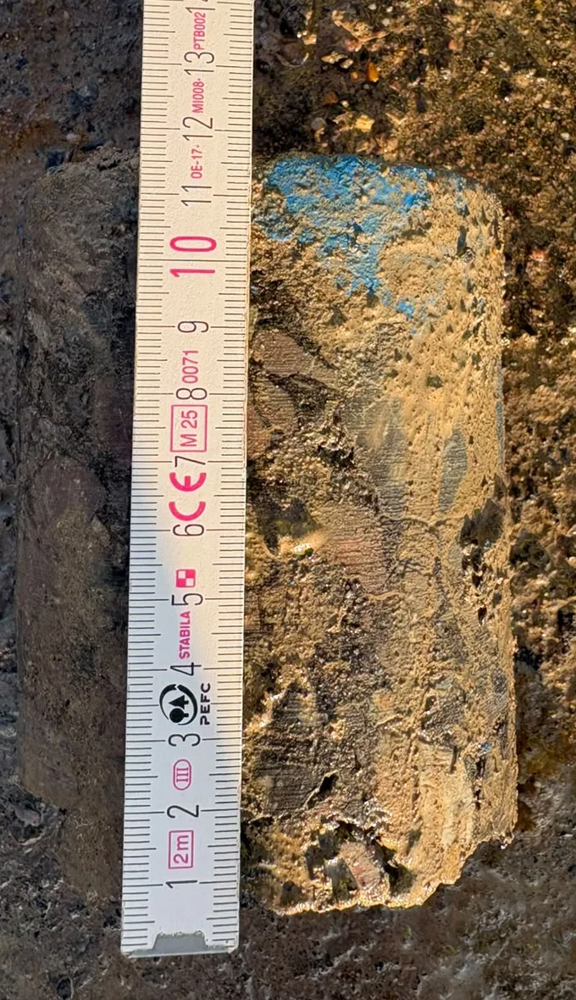

A 180 m adoptable estate road for a national housebuilder · Dimensure tarmac depth survey · October 2026
The stone and the binder were surveyed on the same site control and one taken from the other, giving the thickness laid along both channels and the centre line, checked against the design build-up.
27 of the 30 reliable points were thin. The average was 173 mm against a 198 mm target. At chainage 150 on the centre line it was 116 mm against 185 mm: 69 mm missing. About 26.6 m³ (roughly 63 t) was net short, split by cause: 17.5 m³ tarmac laid low, 9.1 m³ stone laid high.
A core was cut at chainage 150 on the centre line, where the survey showed 116 mm. It came back within 3 mm. One hole confirmed the survey for the rest of the road.
The worst 25 m was too thin to regulate, because an overlay has to be at least about 2.5 times its aggregate size. It had to come out and be relaid: remedial work for the contractors responsible, done at binder stage, before the road was finished.

| Found at | Putting it right | Potential cost |
|---|---|---|
| Binder stage (what happened) | 25 m x 5 m (125 m²) of base and binder relaid by the contractors responsible | No cost to the client |
| At adoption, after the surface course | Day 1: traffic management, saw-cut, plane out 225 mm, haul and tip ~66 t (£6,870). Days 2-3: surfacing gang, paver and roller (£5,000), ~54 t base and binder and ~12 t surface course (£5,730), deliveries, sealing, ironwork, supervision and cores (£2,600). Overheads and margin 15% (£3,030) | ~£23,000 |
| Coring alone instead of a survey | The same 30 points cored at £217-£257 each, 30 holes to reinstate | £6,500-£7,700 |
125 m² (25 m x 5 m), about £186/m². Old tarmac out 28.1 m³ (~66 t at 2.35 t/m³). Direct costs £20,200 + 15% = £23,230, shown as about £23,000. Priced by the day, not the tonne: the planer and gang cost the same whatever the quantity. Return = £23,000 ÷ a fee under £1,000 = over 23x. All costs are estimates based on typical 2026 UK rates, not quotes, and exclude VAT; coring rates are a published 2025 council charge. Delay to adoption, longer bonds and time spent resolving who pays are not included and would usually add to the total. Client, site and contractors not named for confidentiality.